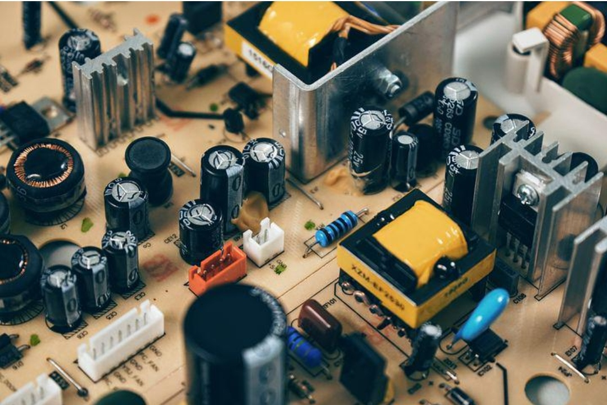
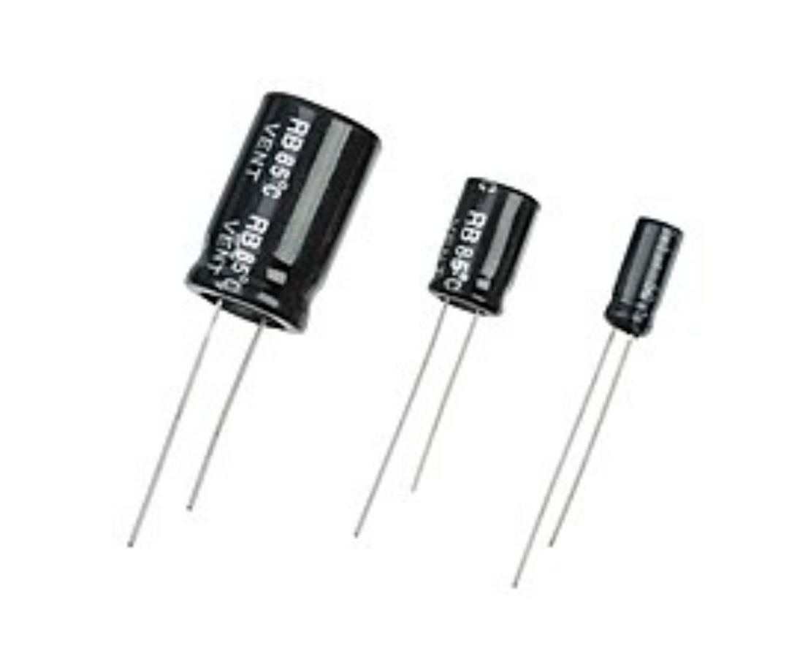
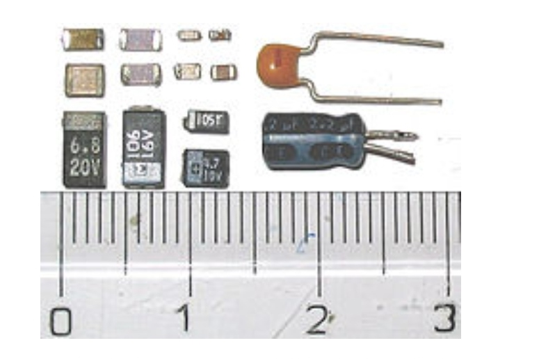

A capacitor is a two-terminal electrical device that possesses the ability to store energy in the form of an electric charge. It consists of two electrical conductors that are separated by a distance. The space between the conductors may be filled by vacuum or with an insulating material known as a dielectric.
If a resistor is like a cushion that is used to control the flow of electricity, then capacitors are like small rechargeable batteries that store small amounts of charge in them. Capacitors do two things at the same time:
  